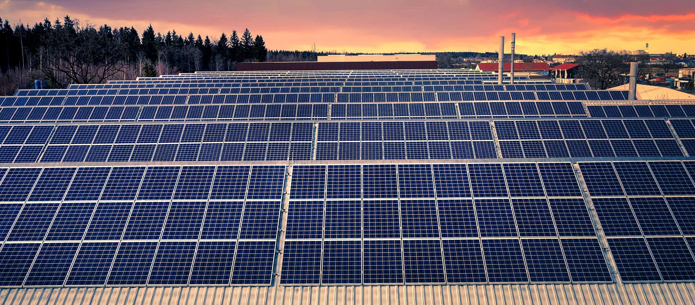

A Noovar: Produção Integrada para Excelência
A Noovar é uma empresa inovadora no campo da energia solar, dedicada a fornecer soluções integradas de painéis solares para empresas e órgãos públicos. Fundada com a visão de transformar o setor energético, a Noovar se destaca por sua produção verticalmente integrada, o que lhe permite controlar todos os estágios da cadeia de produção e, assim, garantir a qualidade excepcional de seus produtos e serviços.
O processo começa com a pesquisa e desenvolvimento, onde a Noovar investe em tecnologias avançadas para aprimorar a eficiência e a durabilidade de seus painéis solares. Com uma equipe de engenheiros experientes e inovadores, a empresa está constantemente na vanguarda das novas tecnologias solares.
A fabricação dos painéis solares é o próximo passo, e a Noovar mantém instalações de última geração para garantir que cada painel produzido atenda aos mais altos padrões de qualidade. A produção é altamente eficiente e sustentável, visando minimizar o impacto ambiental.
